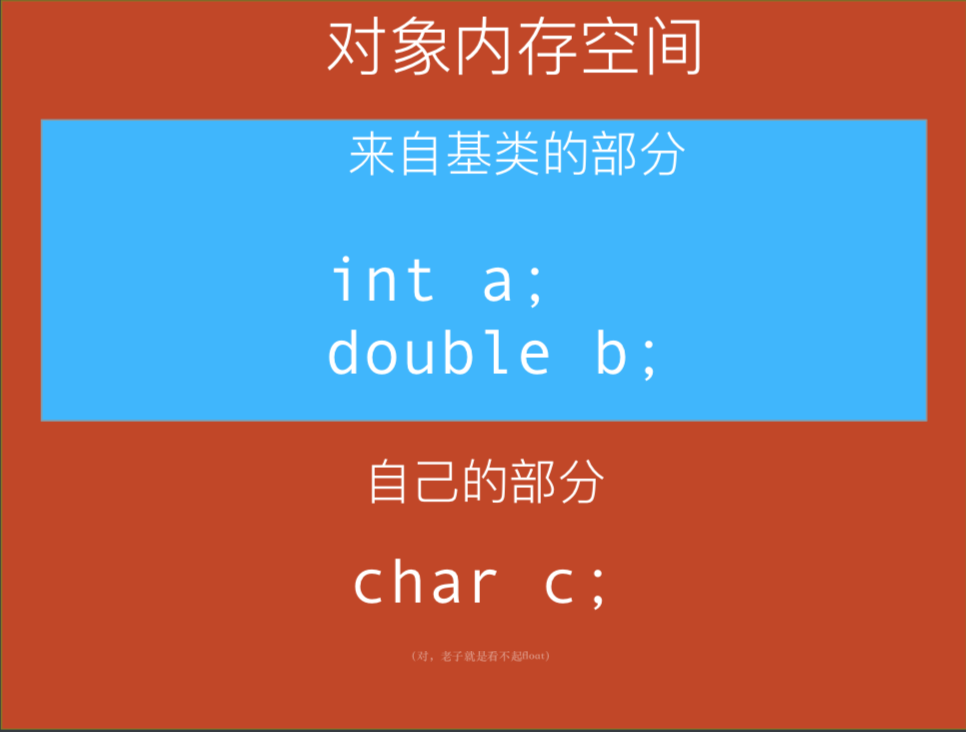

Program into your language, not in it. ——Code Complete
别让语言限制了你的想象力！——我说的
实际上本人一直知道C面向对象这些个玩意，但是从来没有实践过，直到最近玩单片机，移植和扩展RT-thread操作系统才真正在正儿八经的代码里见识和应用到了这些个东西，恰好撸码+复习的太晚导致睡不着，故作此文，以整理，备忘，交流。
相信经过lzh的一番宣传，“只有用面向对象语言才能写出面向对象的程序”这种思想大家应该已经没有了吧，那么就让我们看看一般认为是面向过程的“万物之母”语言——C语言是如何进行面向对象的操作。
另外，C++实现OO时使用的部分思想和方法和这里说的相似。
做一个类
C里面没有类，和类最像的一个玩意就是结构体，在C中充当“类”的重任自然就落在了结构体上。
结构体和类里面写成员变量的方式很类似，唯一头疼的是C结构体里面没有成员函数这种东西。
不过根据冯·诺伊曼老神仙提出的“储存程序”的伟大理论，函数其实也是一种数据，而数据自然可以储存。
储存函数，想到啥了？
没错，函数指针。
1 | struct PureCClass { |
这样一个可以充当类的结构体完成了。
注意这里没有访问控制（我从来不喜欢那玩意），大家都是成年人了，成员变量能不能碰，哪些能碰哪些不能碰，自己心里要有B数。
如果“类”的成员函数需要像上面这样使用对象的某一个成员的话，可以像上面这样直接作为参数传进去（当然也可以传指针什么的），也可以借鉴C++的实现，增加一个this参数：
1 | struct PureCClass { |
当然这里就没有编译器来帮你把this参数传进去了，你得自己手动传入。
如果要做构造和析构函数，我是习惯做成全局函数的，做成成员……可以，意义不大，还要占用一个指针的空间。
1 | struct PureCClass { |
同理你需要手动构造和析构。
相对于C++，我们得到的一个好处是，由于所有函数都是对象中的一个函数指针，我们可以自由地给它们赋值，而无需像C++那样要求某个函数是virtual（尽管付出了一些空间作为代价），这就引发出下一章的内容：继承和多态。
继承和多态
没有继承和多态的面向对象就是耍流氓，而不为了多态的继承更是耍流氓。——我说的
让我们想想，C++中，刨去虚函数表这些玩意，一个继承了其他类的类的对象的内存模型是怎么样的

我们是不是可以把这种模型看作是每个派生类对象里面“有一个1”基类的对象呢？
那么我们就可以用纯C做出这样的实现：
1 | struct Base { |
且慢，这样调用的时候每次都要使用DerivedObject.base，岂不是很麻烦？而且也没有一点继承的感觉……
没错，对于实际的变量来说是这样。
可是，你要知道，如果你掌握了C语言最令人头大的特性2——指针，那你是可以为所欲3为的！
1 | // 假设已经有了 |
另外，前面也提到过，你可以随时“override”掉父类中的函数：
1 | static int f_imp(struct Base* this) { // 这里为什么最好加上static，自己去查 |
在我看来，这样override提供的灵活性要远高于C++的“正统”实现，什么策略模式都不需要了，直接重新挂一个函数上去就行。当然缺点我也提过了，内存占用会上去，另外就是由于没有一些编译期检查，会有一定危险性（比如你完全可以给一个成员函数指针一个NULL或者让它时野指针【这确实有一定意义，可以用来模拟纯虚基类】，然后运行期就会BOOM）。
当然你也可以自己实现一个虚函数表，或者干脆抛开传统OO模型，拥抱ES6之前JS的基于原型的OO模型。你甚至可以把函数都存在一个元素类型是void* *(f)(void* args)这样理论上能代替一切函数的动态数组里，把一切变量都放进void*里，来实现真正的“去类型化”（不过我不觉得这是个好主意）。
毕竟C是万物之母，只有你想不到，没有它做不了。
结合前面说到的“储存程序”思想，我们也许会注意到，OO并非是某种附加于语言之上的东西，而是一种或许早已根植于计算机基本理论之中的思维方式。
当然，没有银弹，OO不是万能的（FP、AOP等等也都不是万能的），在遇到实际问题的时候，要具体问题具体分析，选取最合适的编程范式来解决问题。
1. 注意此处“有一个”和面向对象术语“有一个”的差异，此处的“有一个”是由于实现条件的限制而作出的妥协，实际上想要表现的仍然是面向对象中“是一个”的关系。 ↩
2. 指针，模版，能力越大，责任越大，有时带来的麻烦也就越大。 ↩
3. 在程序里真的可以为所欲为，没有什么不能通过直接改写程序的内存空间来实现的，当然前提是你能改写这些内存。 ↩